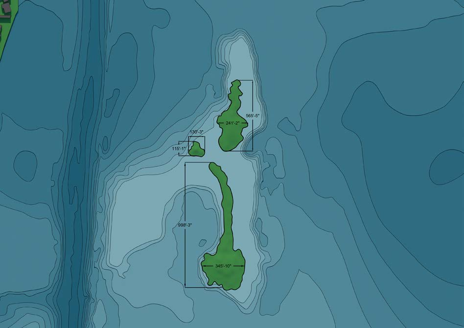
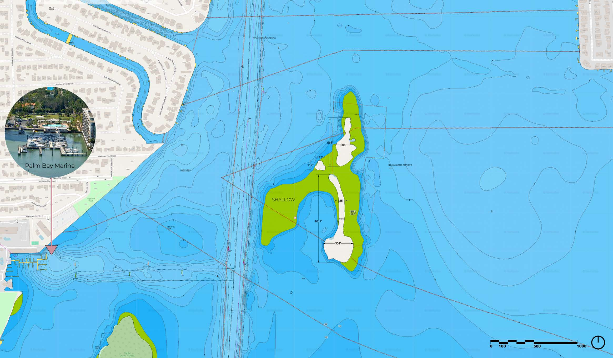
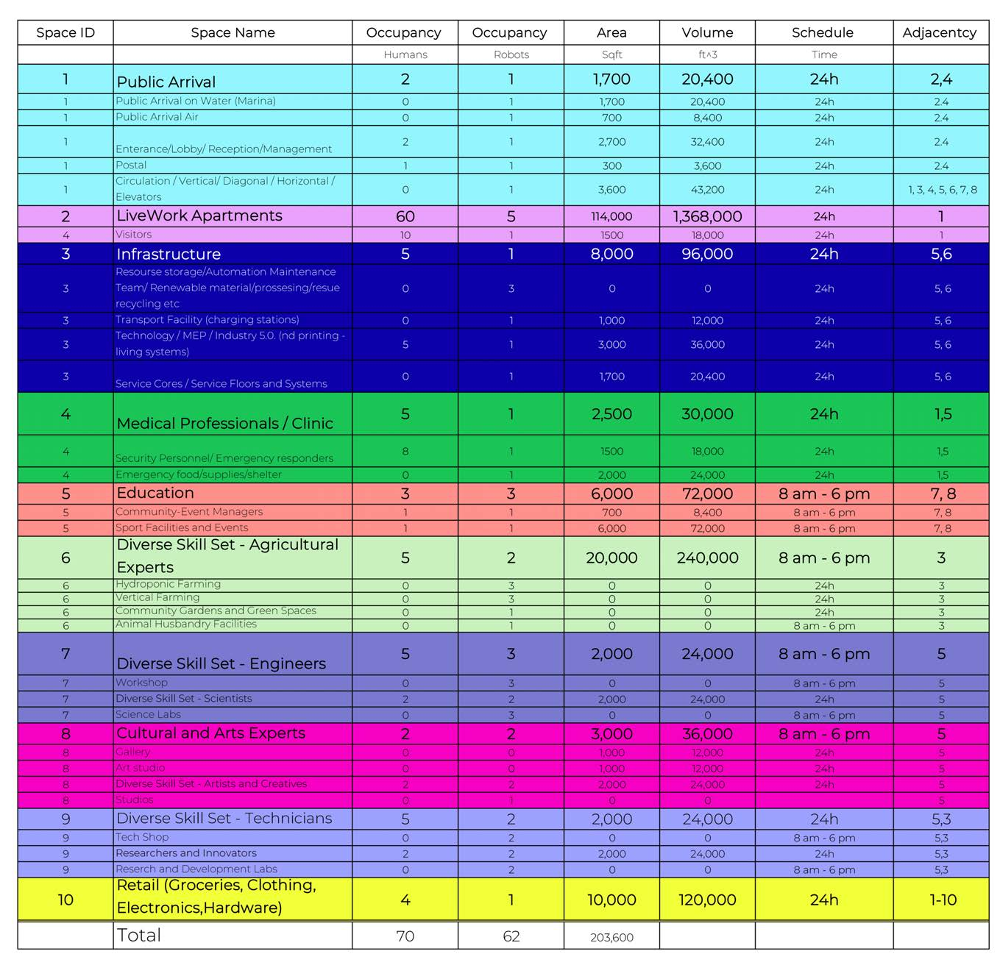
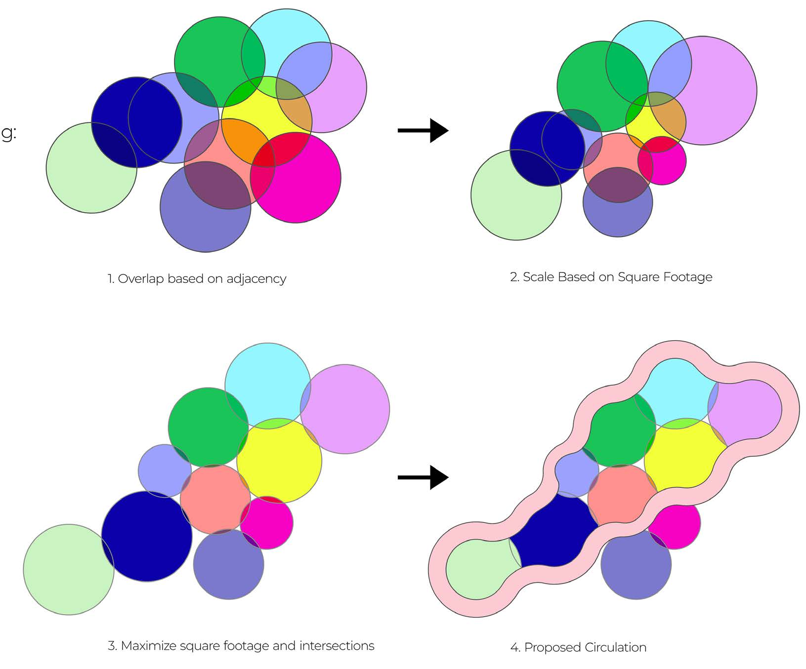
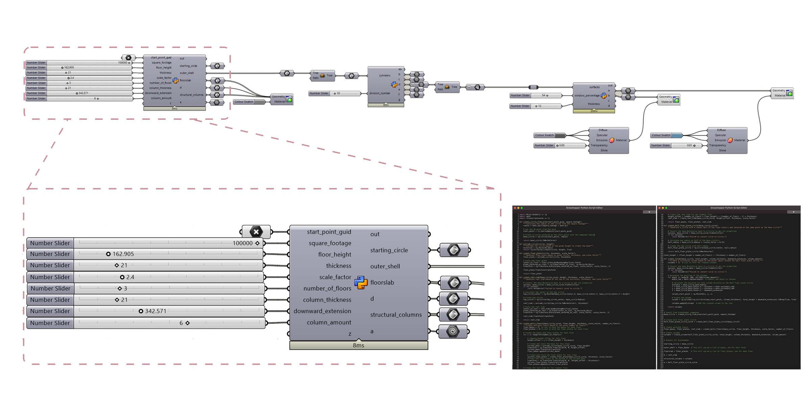
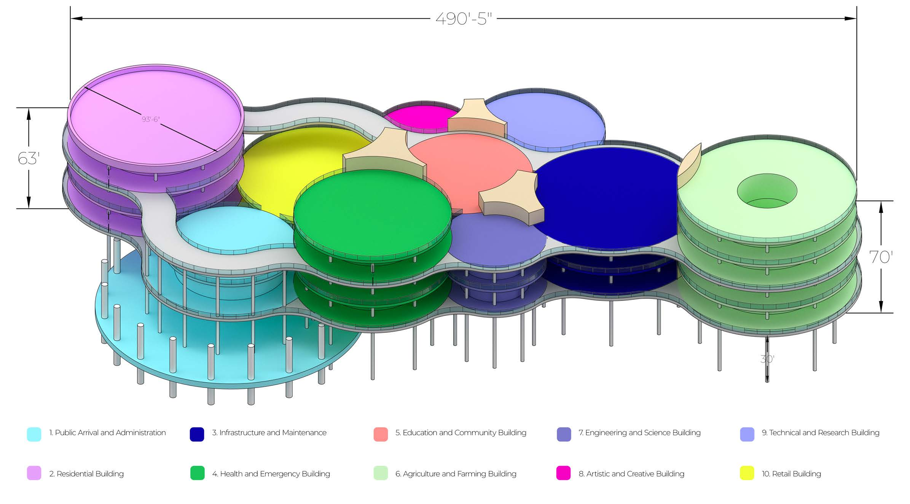
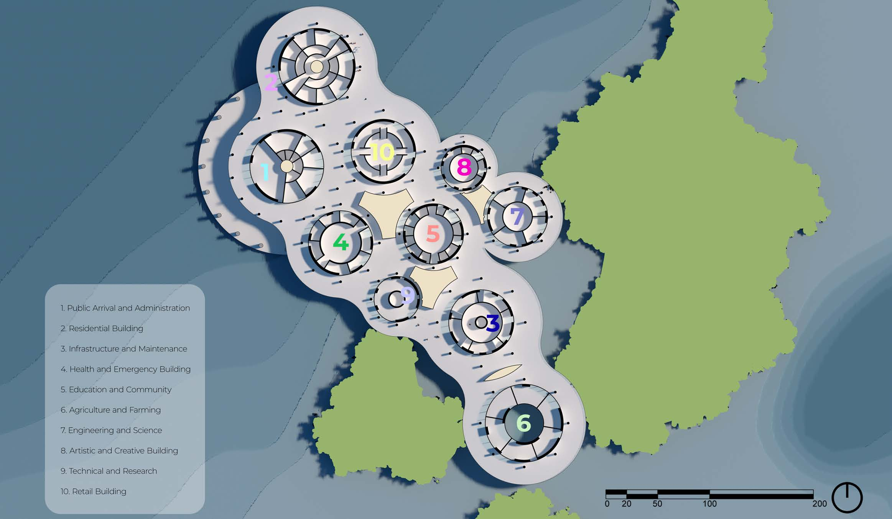
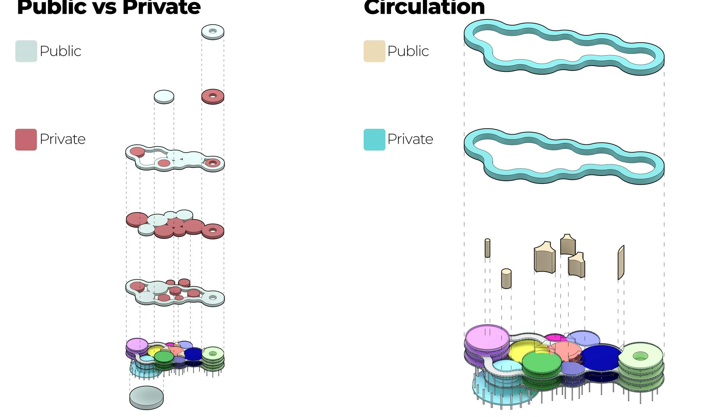
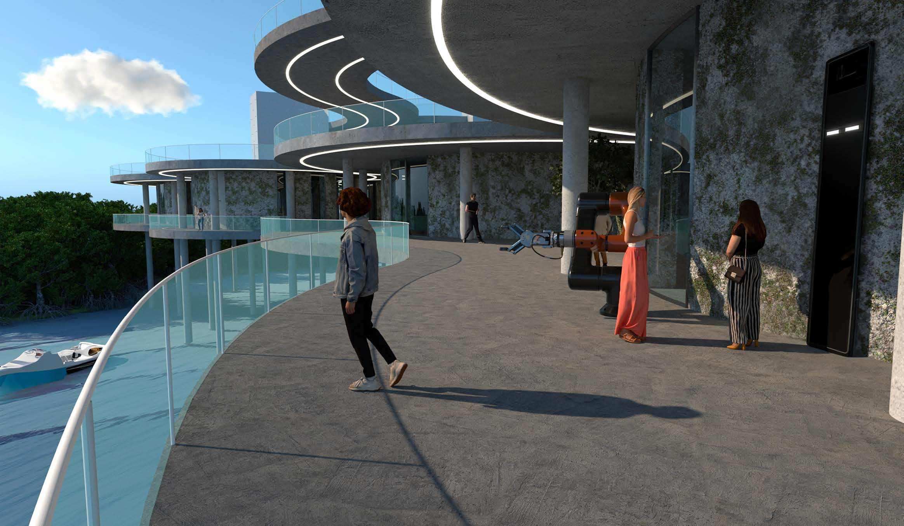

GreenArc Biscayne
A self-sustaining community for Bird Key, Biscayne Bay, generated from a spreadsheet. Ten programs — residential, medical, agricultural, technical, and so on — each sized by its own space-program data, then packed by the bubble-adjacency method: overlap by adjacency, scale by square footage, maximize intersections, read circulation off the result. The Grasshopper/Python script below runs that method — it's the piece that turns the spreadsheet into a building.








